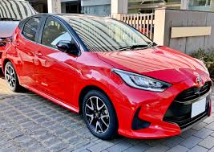
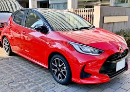
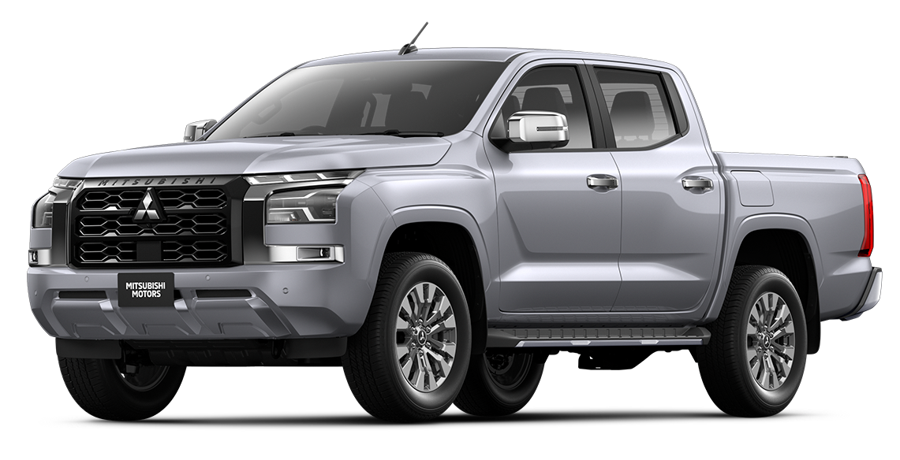
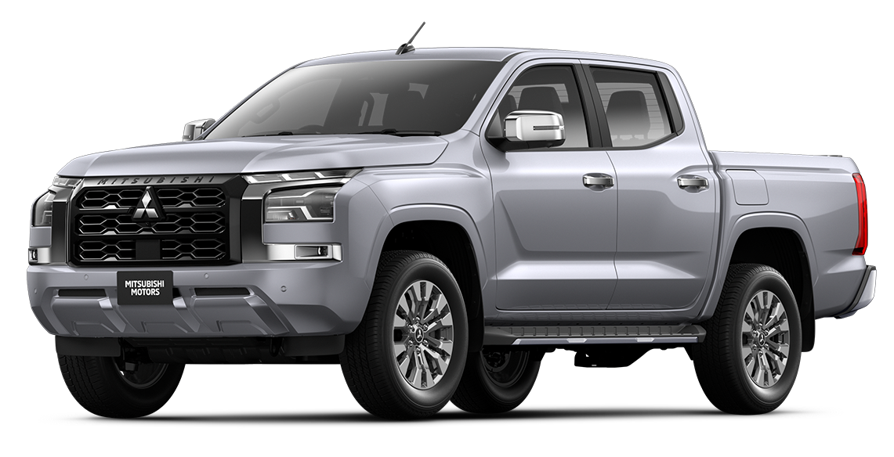

Yaris
เครื่องยนต์: เครื่องยนต์เบนซิน 4 สูบ 1.2 ลิตร Dual VVT-iE กำลังสูงสุด 92 แรงม้า ที่ 6,000 รอบต่อนาที แรงบิดสูงสุด 109 นิวตัน-เมตร ที่ 4,400 รอบต่อนาที ระบบเกียร์อัตโนมัติ Super CVT-iขนาดและมิติ: ยาว: 4,171 มม. กว้าง: 1,730 มม. สูง: 1,500 มม. ระยะฐานล้อ: 2,550 มม. ความจุถังน้ำมัน: 42 ลิตร
คุณสมบัติเด่น: ระบบความปลอดภัย Toyota Safety Sense (ในบางรุ่น) หน้าจอสัมผัสขนาด 7-9 นิ้ว พร้อมระบบ Apple CarPlay และ Android Auto ระบบปรับอากาศอัตโนมัติ ระบบควบคุมการทรงตัว VSC และระบบป้องกันล้อหมุนฟรี TRC ถุงลมเสริมความปลอดภัย SRS หลายตำแหน่ง
รุ่นย่อยหลักๆ: Yaris Sport: เป็นรุ่นเริ่มต้น เน้นความคุ้มค่า อุปกรณ์พื้นฐานครบครัน Yaris Smart: เพิ่มอุปกรณ์อำนวยความสะดวก เช่น หน้าจอสัมผัสขนาดใหญ่ขึ้น Yaris Premium: เพิ่มความหรูหราด้วยเบาะหนัง และอุปกรณ์อำนวยความสะดวกเพิ่มเติม Yaris Premium S: เป็นรุ่นท็อปสุด มีอุปกรณ์ความปลอดภัยครบครันเช่น ระบบช่วยเตือนมุมอับสายตาที่กระจกมองข้าง BSM และระบบช่วยเตือนขณะถอยรถ RCTA.

Yaris ATIV
เครื่องยนต์: เครื่องยนต์เบนซิน 4 สูบ 1.2 ลิตร Dual VVT-iE กำลังสูงสุด 94 แรงม้า ที่ 6,000 รอบต่อนาที แรงบิดสูงสุด 110 นิวตัน-เมตร ที่ 4,400 รอบต่อนาที ระบบเกียร์อัตโนมัติ Super CVT-iขนาดและมิติ: ยาว: 4,425 มม. กว้าง: 1,740 มม. สูง: 1,480 มม. ระยะฐานล้อ: 2,620 มม. ความจุถังน้ำมัน: 42 ลิตร
คุณสมบัติเด่น: ดีไซน์ภายนอกสไตล์ Fastback โฉบเฉี่ยว ทันสมัย ภายในห้องโดยสารกว้างขวาง สะดวกสบาย ระบบความปลอดภัย Toyota Safety Sense (ในบางรุ่น) หน้าจอสัมผัสขนาด 8-9 นิ้ว พร้อมระบบ Apple CarPlay และ Android Auto ระบบปรับอากาศอัตโนมัติ ระบบควบคุมการทรงตัว VSC และระบบป้องกันล้อหมุนฟรี TRC ถุงลมเสริมความปลอดภัย SRS หลายตำแหน่ง
รุ่นย่อยหลักๆ: Yaris ATIV Sport: เป็นรุ่นเริ่มต้น เน้นความคุ้มค่า อุปกรณ์พื้นฐานครบครัน Yaris ATIV Smart: เพิ่มอุปกรณ์อำนวยความสะดวก เช่น หน้าจอสัมผัสขนาดใหญ่ขึ้น Yaris ATIV Premium: เพิ่มความหรูหราด้วยเบาะหนัง และอุปกรณ์อำนวยความสะดวกเพิ่มเติม Yaris ATIV Premium Luxury: เป็นรุ่นท็อปสุด มีอุปกรณ์ความปลอดภัยครบครันเช่น ระบบช่วยเตือนมุมอับสายตาที่กระจกมองข้าง BSM และระบบช่วยเตือนขณะถอยรถ RCTA.
CAMRY
เครื่องยนต์: โตโยต้า แคมรี่ ในประเทศไทยมีเครื่องยนต์ให้เลือกหลักๆ คือ เครื่องยนต์ไฮบริด (HEV) เครื่องยนต์เบนซิน 2.5 ลิตร ทำงานร่วมกับมอเตอร์ไฟฟ้า ระบบส่งกำลังเป็นเกียร์อัตโนมัติ E-CVTขนาดและมิติ: แคมรี่มีขนาดตัวถังที่กว้างขวาง ทำให้มีพื้นที่ห้องโดยสารที่สะดวกสบาย ทั้งผู้โดยสารและพื้นที่เก็บสัมภาระ
คุณสมบัติเด่น: เทคโนโลยีไฮบริด: ให้ประสิทธิภาพการประหยัดน้ำมันที่ดีเยี่ยม ลดการปล่อยมลพิษ ระบบความปลอดภัย Toyota Safety Sense: ระบบควบคุมความเร็วอัตโนมัติแบบแปรผัน (Adaptive Cruise Control) ระบบเตือนเมื่อออกนอกเลน (Lane Departure Alert) ระบบช่วยควบคุมรถให้อยู่ในช่องจราจร (Lane Tracing Assist) ระบบเตือนมุมอับสายตาที่กระจกมองข้าง (Blind Spot Monitor) ระบบช่วยเตือนขณะถอยรถ RCTA ความสะดวกสบายและหรูหรา: ภายในห้องโดยสารที่กว้างขวางและสะดวกสบาย วัสดุตกแต่งคุณภาพสูง ระบบเครื่องเสียงระดับพรีเมียม หน้าจอสัมผัสขนาดใหญ่ พร้อมระบบ Apple CarPlay และ Android Auto มีรุ่น GR Sport ที่ตกแต่งแบบสปอร์ต
รุ่นย่อยหลักๆ: 1.6 G 1.8 Sport HEV Premium HEV GR Sport

GR Yaris
เครื่องยนต์: เครื่องยนต์เบนซิน 3 สูบ เทอร์โบ รหัส G16E-GTS ขนาด 1.6 ลิตร กำลังสูงสุด: 280 แรงม้า แรงบิดสูงสุด: 390 นิวตันเมตรขนาดและมิติ: ยาว: 3,995 มิลลิเมตร กว้าง: 1,805 มิลลิเมตร สูง: 1,455 มิลลิเมตร
ระบบส่งกำลัง: เกียร์ธรรมดา 6 จังหวะ iMT (Intelligent Manual Transmission) หรือ เกียร์อัตโนมัติ 8 จังหวะ GR-DAT ระบบขับเคลื่อน 4 ล้อ GR-FOUR
ช่วงล่างและเบรก: ช่วงล่างด้านหน้า: McPherson Strut พร้อมเหล็กกันโคลง ช่วงล่างด้านหลัง: Double Wishbone ระบบเบรก: ดิสก์เบรกแบบมีครีบระบายความร้อน
คุณสมบัติเด่น: ระบบขับเคลื่อน 4 ล้อ GR-FOUR ที่สามารถปรับการกระจายแรงบิดได้ ตัวถังน้ำหนักเบาและแข็งแรง ดีไซน์ภายนอกและภายในที่บ่งบอกถึงสมรรถนะ มีระบบ Torsen LSD (Limited Slip Differential) มีโหมดการขับขี่ Normal, Sport และ Track GR Yaris เป็นรถที่ถูกพัฒนาขึ้นโดย Gazoo Racing ซึ่งเป็นแผนกมอเตอร์สปอร์ตของโตโยต้า GR Yaris ได้รับการออกแบบมาเพื่อการขับขี่ที่สนุกสนานและมีสมรรถนะสูง

GR Corolla
เครื่องยนต์: เครื่องยนต์เบนซิน 3 สูบ เทอร์โบ G16E-GTS ขนาด 1.6 ลิตร กำลังสูงสุด 300 แรงม้า ที่ 6,500 รอบต่อนาที แรงบิดสูงสุด 400 นิวตันเมตร ที่ 3,000-5,550 รอบต่อนาทีขนาดและมิติ: ยาว: 3,995 มิลลิเมตร กว้าง: 1,805 มิลลิเมตร สูง: 1,455 มิลลิเมตร
ระบบส่งกำลัง: มีตัวเลือกเกียร์ธรรมดา 6 จังหวะ iMT (Intelligent Manual Transmission) และเกียร์อัตโนมัติ 8 จังหวะ GR-DAT ระบบขับเคลื่อน 4 ล้อ GR-FOUR
ช่วงล่างและเบรก: ช่วงล่างด้านหน้า: McPherson Strut พร้อมเหล็กกันโคลง ช่วงล่างด้านหลัง: Double Wishbone ระบบเบรก: ดิสก์เบรกแบบมีครีบระบายความร้อน
คุณสมบัติเด่น: ระบบขับเคลื่อน 4 ล้อ GR-FOUR ที่สามารถปรับการกระจายแรงบิดได้ ช่วงล่างและระบบเบรกที่ได้รับการปรับปรุงเพื่อสมรรถนะการขับขี่ที่ดียิ่งขึ้น ดีไซน์ภายนอกและภายในที่บ่งบอกถึงความเป็นรถสมรรถนะสูง ในรุ่นไมเนอร์เชนจ์ 2024 ได้มีการปรับปรุงในส่วนของ ช่วงล่าง, จุดยึดต่างๆของตัวถัง ให้มีความแข็งแรงมากยิ่งขึ้น
ราคา: ราคาจำหน่ายประมาณ 3,900,000 บาท
GR 86
เครื่องยนต์: เครื่องยนต์เบนซิน 4 สูบนอน (Boxer) ขนาด 2.4 ลิตร กำลังสูงสุด 237 แรงม้า ที่ 7,000 รอบต่อนาที แรงบิดสูงสุด 250 นิวตันเมตร ที่ 3,700 รอบต่อนาทีขนาดและมิติ: มีความยาว 4,265 มิลลิเมตร มีความกว้าง 1,775 มิลลิเมตร มีความสูง 1,310 มิลลิเมตร ฐานล้อ 2,575 มิลลิเมตร
ระบบส่งกำลัง: มีตัวเลือกเกียร์ธรรมดา 6 จังหวะ และเกียร์อัตโนมัติ 6 จังหวะ ระบบขับเคลื่อนล้อหลัง
คุณสมบัติเด่น: ดีไซน์สปอร์ตและน้ำหนักเบา ช่วงล่างที่ได้รับการปรับแต่งเพื่อสมรรถนะการขับขี่ที่ดียิ่งขึ้น ระบบเบรกที่ทรงพลัง มีจุดศูนย์ถ่วงต่ำ GR 86 ได้รับการพัฒนาขึ้นเพื่อมอบประสบการณ์การขับขี่ที่สนุกสนานและเร้าใจ รถคันนี้มีการกระจายนำ้หนักที่สมดุล
ราคา: ราคาจำหน่ายประมาณ 2,900,000 บาท

GR Supra
เครื่องยนต์: เครื่องยนต์เบนซิน 6 สูบเรียง เทอร์โบ ขนาด 3.0 ลิตร กำลังสูงสุด 387 แรงม้า แรงบิดสูงสุด 500 นิวตันเมตรขนาดและมิติ: ยาว: 4,379 มิลลิเมตร กว้าง: 1,854 มิลลิเมตร สูง: 1,294 มิลลิเมตร
ระบบส่งกำลัง: เกียร์อัตโนมัติ 8 จังหวะ ระบบขับเคลื่อนล้อหลัง
คุณสมบัติเด่น: ดีไซน์สปอร์ตและน้ำหนักเบา ช่วงล่างที่ได้รับการปรับแต่งเพื่อสมรรถนะการขับขี่ที่ดียิ่งขึ้น ระบบเบรกที่ทรงพลัง มีจุดศูนย์ถ่วงต่ำ ระบบความปลอดภัยก่อนการชน (Pre-Collision System) ระบบเตือนเมื่อออกนอกเลน (Lane Departure Alert) ระบบควบคุมความเร็วอัตโนมัติแบบแปรผัน (Dynamic Radar Cruise1 Control) ระบบเตือนมุมอับสายตา (Blind Spot Monitor) หน้าจอสัมผัสขนาด 8.8 นิ้ว ระบบเครื่องเสียง JBL เบาะหนัง Alcantara GR Supra ได้รับการพัฒนาขึ้นเพื่อมอบประสบการณ์การขับขี่ที่สนุกสนานและเร้าใจ รถคันนี้มีการกระจายน้ำหนักที่สมดุล
ราคา: ราคาจำหน่ายประมาณ 4,690,000 บาท

Fortuner Leader
เครื่องยนต์: เครื่องยนต์ดีเซล 2.4 ลิตร เทอร์โบ (2GD-FTV) กำลังสูงสุด 150 แรงม้า ที่ 3,400 รอบต่อนาที แรงบิดสูงสุด 400 นิวตันเมตร ที่ 1,600-2,000 รอบต่อนาที ระบบส่งกำลัง เกียร์อัตโนมัติ 6 จังหวะ มีให้เลือกทั้งระบบขับเคลื่อน 2 ล้อ (2WD) และ 4 ล้อ (4WD)ขนาดและมิติ: ยาว: 4,795 มิลลิเมตร กว้าง: 1,855 มิลลิเมตร สูง: 1,835 มิลลิเมตร
คุณสมบัติเด่น: ดีไซน์ภายนอกที่แข็งแกร่งและดุดัน ภายในห้องโดยสารกว้างขวางและสะดวกสบาย ระบบความปลอดภัยที่ครบครัน ระบบความปลอดภัยที่ Toyota Safety Sense มีระบบแจ้งเตือนแรงดันลมยาง TPMS. ไฟหน้า Bi-Beam LED. ระบบเปิด-ปิดไฟหน้า แบบอัตโนมัติ กล้องมองรอบคัน พร้อมมุมมองแบบ 3D ประตูท้ายเปิด-ปิดระบบไฟฟ้า
ราคา: ราคาจำหน่ายประมาณ 1,200,000 บาท
Alphard
เครื่องยนต์: โตโยต้า อัลฟาร์ด ในประเทศไทยมีเครื่องยนต์ให้เลือกหลักๆ คือ เครื่องยนต์ไฮบริด (HEV) เครื่องยนต์เบนซิน 2.5 ลิตร ทำงานร่วมกับมอเตอร์ไฟฟ้า ระบบส่งกำลังเป็นเกียร์อัตโนมัติ E-CVTขนาดและมิติ: อัลฟาร์ดมีขนาดตัวถังที่ใหญ่ ทำให้มีพื้นที่ห้องโดยสารที่กว้างขวางและสะดวกสบาย ทั้งผู้โดยสารและพื้นที่เก็บสัมภาระ มิติภายนอก ยาวxกว้างxสูง (มม.) 4,945 x 1,850 x 1,895
ระบบส่งกำลัง: เกียร์อัตโนมัติ 8 จังหวะ ระบบขับเคลื่อนล้อหลัง
คุณสมบัติเด่น: เทคโนโลยีไฮบริด ความสะดวกสบายและหรูหรา ระบบควบคุมความเร็วอัตโนมัติแบบแปรผัน (Adaptive Cruise Control) ระบบเตือนเมื่อออกนอกเลน (Lane Departure Alert) ระบบช่วยควบคุมรถให้อยู่ในช่องจราจร (Lane Tracing Assist) ระบบเตือนมุมอับสายตาที่กระจกมองข้าง (Blind Spot Monitor) ระบบช่วยเตือนขณะถอยรถ RCTA
ราคา: ราคาจำหน่ายประมาณ 4,300,000 บาท

Hilux Champ
เครื่องยนต์: มีเครื่องยนต์ให้เลือก 3 แบบ เครื่องยนต์เบนซิน 2.0 ลิตร เครื่องยนต์เบนซิน 2.7 ลิตร เครื่องยนต์ดีเซล 2.4 ลิตร เทอร์โบขนาดและมิติ: มีรุ่นฐานล้อสั้น (SWB) และรุ่นฐานล้อยาว (LWB) รุ่นฐานล้อสั้น: ยาว: 4,970 มิลลิเมตร กว้าง: 1,785 มิลลิเมตร สูง: 1,735 มิลลิเมตร ความยาวฐานล้อ 2,750 มิลลิเมตร มิติกระบะท้าย (กว้าง x ยาว x สูง) 2,312 x 1,711 x 327 มิลลิเมตร
รุ่นฐานล้อยาว: ยาว: 5,300 มิลลิเมตร กว้าง: 1,785 มิลลิเมตร สูง: 1,735 มิลลิเมตร ความยาวฐานล้อ 3,085 มิลลิเมตร มิติกระบะท้าย (กว้าง x ยาว x สูง) 2,674 x 1,711 x 327 มิลลิเมตร
คุณสมบัติเด่น: ดีไซน์ภายนอกที่แข็งแกร่งและดุดัน ภายในห้องโดยสารกว้างขวางและสะดวกสบาย ระบบความปลอดภัยที่ครบครัน ระบบความปลอดภัยที่ Toyota Safety Sense มีระบบแจ้งเตือนแรงดันลมยาง TPMS. ไฟหน้า Bi-Beam LED. ระบบเปิด-ปิดไฟหน้า แบบอัตโนมัติ กล้องมองรอบคัน พร้อมมุมมองแบบ 3D ประตูท้ายเปิด-ปิดระบบไฟฟ้า
ราคา: ราคาจำหน่ายประมาณ 1,200,000 บาท

ALL NEW CR-V
เครื่องยนต์: มีให้เลือก 2 แบบ เครื่องยนต์เบนซิน 1.5 ลิตร VTEC TURBO ให้กำลังสูงสุด 190 แรงม้า เครื่องยนต์ไฮบริด 2.0 ลิตร e:HEV ให้กำลังสูงสุด 148 แรงม้า (เครื่องยนต์) และ 184 แรงม้า (มอเตอร์ไฟฟ้า)ระบบส่งกำลัง: เกียร์อัตโนมัติ CVT สำหรับเครื่องยนต์เบนซิน เกียร์อัตโนมัติ E-CVT สำหรับเครื่องยนต์ไฮบริด ระบบขับเคลื่อนมีทั้งแบบ 2 ล้อและ4ล้อ ขนาดและมิติ: ขนาดตัวถังที่ใหญ่ขึ้น ทำให้มีพื้นที่ห้องโดยสารและพื้นที่เก็บสัมภาระที่กว้างขวาง ความยาว 4,691 มิลลิเมตร ความสูง 1,691 มิลลิเมตร ฐานล้อ 2,700 มิลลิเมตร ระยะห่างระหว่างล้อคู่หน้า / คู่หลัง 1,612 / 1,640
คุณสมบัติเด่น: ดีไซน์ภายนอกและภายในที่ทันสมัยและหรูหรา เทคโนโลยีความปลอดภัย Honda SENSING ระบบกล้องมองภาพรอบทิศทาง (Multi-view Camera System: MVCS) ระบบแสดงภาพมุมอับสายตาขณะเปลี่ยนเลน (Honda LaneWatch) ระบบควบคุมความเร็วขณะลงทางลาดชัน (Hill Descent Control: HDC) ไฟส่องสว่างด้านข้างอัตโนมัติขณะเลี้ยว (Active Cornering Light: ACL)
ราคา: ราคาจำหน่ายประมาณ 1,420,000 บาท

HR-V
เครื่องยนต์: มีให้เลือก 2 แบบ เครื่องยนต์เบนซิน 1.5 ลิตร i-VTEC เครื่องยนต์ไฮบริด e:HEV (Hybrid)ระบบส่งกำลัง: เกียร์อัตโนมัติ CVT สำหรับเครื่องยนต์เบนซิน เกียร์อัตโนมัติ E-CVT สำหรับเครื่องยนต์ไฮบริด ขนาดและมิติ: ขนาดตัวถังที่กะทัดรัด ทำให้มีความคล่องตัวในการขับขี่ในเมือง ความยาว 4,385 มิลลิเมตร ความกว้าง 1,790 มิลลิเมตร ความสูง 1,590 มิลลิเมตร
คุณสมบัติเด่น: ดีไซน์ภายนอกสปอร์ตและทันสมัย ภายในห้องโดยสารกว้างขวางและสะดวกสบาย ระบบความปลอดภัย Honda SENSING ระบบแสดงภาพมุมอับสายตาขณะเปลี่ยนเลน (Honda LaneWatch) ระบบเครื่องเสียงหน้าจอสัมผัสขนาดใหญ่ ระบบปรับอากาศอัตโนมัติ ระบบเชื่อมต่อ Honda CONNECT
ราคา: ราคาจำหน่ายประมาณ 1,000,000 บาท

CITY HATCHBACK
เครื่องยนต์: มีให้เลือก 2 แบบ เครื่องยนต์เบนซิน 1.5 ลิตร i-VTEC เครื่องยนต์ไฮบริด e:HEV (Hybrid)ระบบส่งกำลัง: เกียร์อัตโนมัติ CVT สำหรับเครื่องยนต์เบนซิน เกียร์อัตโนมัติ E-CVT สำหรับเครื่องยนต์ไฮบริด ขนาดและมิติ: ขนาดตัวถังที่กะทัดรัด ทำให้มีความคล่องตัวในการขับขี่ในเมือง ความยาว: 4,349 มิลลิเมตร ความกว้าง: 1,748 มิลลิเมตร ความสูง: 1,488 มิลลิเมตร ระยะฐานล้อ 2,600 มิลลิเมตร
คุณสมบัติเด่น: ดีไซน์ภายนอกสปอร์ตและทันสมัย ภายในห้องโดยสารกว้างขวางและสะดวกสบาย เบาะนั่งอัลตราซีท (ULTR) ปรับพับได้หลายรูปแบบ ระบบความปลอดภัย Honda SENSING (ในบางรุ่น) ระบบเครื่องเสียงหน้าจอสัมผัสขนาดใหญ่ ระบบปรับอากาศอัตโนมัติ ระบบเชื่อมต่อ Honda CONNECT (ในบางรุ่น)
ราคา: ราคาจำหน่ายประมาณ 600,000 บาท

CIVIC VTEC TURBO
เครื่องยนต์: เครื่องยนต์เบนซิน 4 สูบ 1.5 ลิตร VTEC TURBO กำลังสูงสุด 178 แรงม้า ที่ 6,000 รอบต่อนาที แรงบิดสูงสุด 240 นิวตันเมตร ที่ 1,700-4,500 รอบต่อนาที ระบบส่งกำลัง เกียร์อัตโนมัติ CVT รองรับน้ำมัน E85ระบบส่งกำลัง: เกียร์อัตโนมัติ CVT สำหรับเครื่องยนต์เบนซิน เกียร์อัตโนมัติ E-CVT สำหรับเครื่องยนต์ไฮบริด ขนาดและมิติ: ความยาว 4,681 มิลลิเมตร ความกว้าง 1,802 มิลลิเมตร ความสูง 1,415 มิลลิเมตร
คุณสมบัติเด่น: ดีไซน์ภายนอกสปอร์ตและทันสมัย ภายในห้องโดยสารกว้างขวางและสะดวกสบาย ระบบความปลอดภัย Honda SENSING ระบบเครื่องเสียงหน้าจอสัมผัสขนาดใหญ่ ระบบปรับอากาศอัตโนมัติ ระบบเชื่อมต่อ Honda CONNECT (ในบางรุ่น)
ราคา: ราคาจำหน่ายประมาณ 1,000,000 บาท

ACCORD
เครื่องยนต์: ฮอนด้า แอคคอร์ด ในประเทศไทยมีเครื่องยนต์ให้เลือกคือ เครื่องยนต์ไฮบริด (e:HEV) เครื่องยนต์เบนซิน 2.0 ลิตร Direct Injection Atkinson-Cycle DOHC ทำงานร่วมกับมอเตอร์ไฟฟ้า 2 ตัว ระบบส่งกำลังเป็นเกียร์อัตโนมัติ E-CVTระบบส่งกำลัง: เกียร์อัตโนมัติ CVT สำหรับเครื่องยนต์เบนซิน เกียร์อัตโนมัติ E-CVT สำหรับเครื่องยนต์ไฮบริด ขนาดและมิติ: ความยาว: 4,962 มิลลิเมตร ความกว้าง: 1,862 มิลลิเมตร ความสูง: 1,449 มิลลิเมตร
คุณสมบัติเด่น: ดีไซน์ภายนอกและภายในที่หรูหราและทันสมัย เทคโนโลยีความปลอดภัย Honda SENSING ระบบกล้องมองภาพรอบทิศทาง (Multi-view Camera System: MVCS) ระบบแสดงภาพมุมอับสายตาขณะเปลี่ยนเลน (Honda LaneWatch) ระบบควบคุมความเร็วขณะลงทางลาดชัน (Hill Descent Control: HDC) ไฟส่องสว่างด้านข้างอัตโนมัติขณะเลี้ยว (Active Cornering Light: ACL) ระบบเครื่องเสียงหน้าจอสัมผัสขนาดใหญ่ ระบบเชื่อมต่อ Honda CONNECT
ราคา: ราคาจำหน่ายประมาณ 1,500,000 บาท

WR-V
เครื่องยนต์: เครื่องยนต์เบนซิน 4 สูบ 1.5 ลิตร i-VTEC กำลังสูงสุด 121 แรงม้า ที่ 6,600 รอบต่อนาที แรงบิดสูงสุด 145 นิวตันเมตร ที่ 4,300 รอบต่อนาที ระบบส่งกำลัง เกียร์อัตโนมัติ CVTระบบส่งกำลัง: ระบบส่งกำลัง เกียร์อัตโนมัติ CVT ขนาดและมิติ: ความยาว: 4,060 มิลลิเมตร ความกว้าง: 1,780 มิลลิเมตร ความสูง: 1,608 มิลลิเมตร ระยะฐานล้อ: 2,485 มิลลิเมตร
คุณสมบัติเด่น: ดีไซน์ภายนอกสไตล์สปอร์ตและทันสมัย ภายในห้องโดยสารกว้างขวาง ระบบความปลอดภัย Honda SENSING (ในบางรุ่น) ระบบเครื่องเสียงหน้าจอสัมผัสขนาดใหญ่ มีระบบ Honda Connect ระบบปรับอากาศอัตโนมัติ
ราคา: ราคาจำหน่ายประมาณ 800,000 บาท

BR-V
เครื่องยนต์: เครื่องยนต์เบนซิน 4 สูบ 1.5 ลิตร i-VTEC กำลังสูงสุด 121 แรงม้า ที่ 6,600 รอบต่อนาที แรงบิดสูงสุด 145 นิวตันเมตร ที่ 4,300 รอบต่อนาที ระบบส่งกำลัง เกียร์อัตโนมัติ CVTระบบส่งกำลัง: ระบบส่งกำลัง เกียร์อัตโนมัติ CVT
ขนาดและมิติ: ความยาว: 4,490 มิลลิเมตร ความกว้าง: 1,780 มิลลิเมตร ความสูง: 1,685 มิลลิเมตร ระยะฐานล้อ: 2,695 มิลลิเมตร
คุณสมบัติเด่น: ดีไซน์ภายนอกสไตล์สปอร์ตและทันสมัย ภายในห้องโดยสารกว้างขวางและสะดวกสบาย เบาะนั่ง 7 ที่นั่ง ปรับพับได้หลายรูปแบบ ระบบความปลอดภัย Honda SENSING ระบบเครื่องเสียงหน้าจอสัมผัสขนาดใหญ่ ระบบ Honda Connect ระบบปรับอากาศอัตโนมัติ เบาะนั่งผู้โดยสารแถวที่ 2 และ 3 สามารถปรับพับได้หลายรูปแบบ
ราคา: ราคาจำหน่ายประมาณ 915,000 บาท

CITY VTEC TURBO
เครื่องยนต์: เครื่องยนต์เบนซิน 3 สูบ 1.0 ลิตร VTEC TURBO กำลังสูงสุด 122 แรงม้า ที่ 5,500 รอบต่อนาที แรงบิดสูงสุด 173 นิวตันเมตร ที่ 2,000-4,500 รอบต่อนาที ระบบส่งกำลัง เกียร์อัตโนมัติ CVT รองรับน้ำมัน E20ระบบส่งกำลัง: ระบบส่งกำลัง เกียร์อัตโนมัติ CVT
ขนาดและมิติ: ความยาว: 4,589 มิลลิเมตร ความกว้าง: 1,748 มิลลิเมตร ความสูง: 1,467 มิลลิเมตร ระยะฐานล้อ: 2,600 มิลลิเมตร
คุณสมบัติเด่น: ดีไซน์ภายนอกสปอร์ตและทันสมัย ภายในห้องโดยสารกว้างขวางและสะดวกสบาย ระบบความปลอดภัย Honda SENSING (ในบางรุ่น) ระบบเครื่องเสียงหน้าจอสัมผัสขนาดใหญ่ ระบบปรับอากาศอัตโนมัติ ระบบเชื่อมต่อ Honda CONNECT (ในบางรุ่น)
ราคา: ราคาจำหน่ายประมาณ 629,000 บาท

CIVIC TYPE R
เครื่องยนต์: เครื่องยนต์เบนซิน 4 สูบ 2.0 ลิตร VTEC TURBO กำลังสูงสุด 320 แรงม้า ที่ 6,500 รอบต่อนาที แรงบิดสูงสุด 420 นิวตันเมตร ที่ 2,600-4,000 รอบต่อนาที ระบบส่งกำลัง เกียร์ธรรมดา 6 จังหวะ ระบบขับเคลื่อนล้อหน้าระบบส่งกำลัง: ระบบส่งกำลัง เกียร์อัตโนมัติ CVT
ขนาดและมิติ: ความกว้าง 1,890 มิลลิเมตร ความสูง 1,407 มิลลิเมตร ฐานล้อ 2,734 มิลลิเมตร
คุณสมบัติเด่น: ดีไซน์ภายนอกและภายในที่สปอร์ตและดุดัน ช่วงล่างที่ได้รับการปรับแต่งเพื่อสมรรถนะการขับขี่ที่ดียิ่งขึ้น ระบบเบรกที่ทรงพลัง มีโหมดการขับขี่ให้เลือก 4 แบบ (COMFORT, SPORT, +R, Individual) เทคโนโลยีความปลอดภัย Honda SENSING
ราคา: ราคาจำหน่ายประมาณ 3,990,000 บาท

Outback
เครื่องยนต์: เครื่องยนต์เบนซินบ็อกเซอร์ 4 สูบ 2.5 ลิตร Direct Injection กำลังสูงสุด 182 แรงม้า ที่ 5,800 รอบต่อนาที แรงบิดสูงสุด 239 นิวตันเมตร ที่ 4,400 รอบต่อนาที ระบบส่งกำลัง เกียร์อัตโนมัติ Lineartronic CVT ระบบขับเคลื่อน สี่ล้อสมมาตร (Symmetrical All-Wheel Drive)ระบบส่งกำลัง: เกียร์อัตโนมัติ Lineartronic CVT (Continuously Variable Transmission)
ขนาดและมิติ: ขนาดตัวถังที่ใหญ่ ทำให้มีพื้นที่ห้องโดยสารและพื้นที่เก็บสัมภาระที่กว้างขวาง ขนาดตัวถัง ยาว 4,870 มิลลิเมตร ขนาดตัวถัง กว้าง 1,875 มิลลิเมตร ขนาดตัวถัง สูง 1,675 มิลลิเมตร
คุณสมบัติเด่น: ระบบขับเคลื่อนสี่ล้อสมมาตร (Symmetrical All-Wheel Drive) ที่ให้การควบคุมรถที่ยอดเยี่ยมในทุกสภาพถนน ระบบความปลอดภัย EyeSight Driver Assist Technology ระบบ X-MODE ที่ช่วยในการขับขี่บนทางวิบาก ภายในห้องโดยสารที่กว้างขวางและสะดวกสบาย ระบบช่วยเหลือการขับขี่ off-road ที่ยอดเยี่ยม มีระบบ SI-DRIVE ที่สามารถปรับโหมดการขับขี่ได้ 2 โหมด คือ Intelligent และ Sport
ราคา: ราคาจำหน่ายประมาณ 2,700,000 บาท
Forester
เครื่องยนต์: เครื่องยนต์เบนซินบ็อกเซอร์ 4 สูบ 2.0 ลิตร Direct Injection กำลังสูงสุด 156 แรงม้า ที่ 6,000 รอบต่อนาที แรงบิดสูงสุด 196 นิวตันเมตร ที่ 4,000 รอบต่อนาที ระบบส่งกำลัง เกียร์อัตโนมัติ Lineartronic CVT ระบบขับเคลื่อน สี่ล้อสมมาตร (Symmetrical All-Wheel Drive)ระบบส่งกำลัง: เกียร์อัตโนมัติ Lineartronic CVT (Continuously Variable Transmission)
ขนาดและมิติ: ความยาว: 4,625 มิลลิเมตร ความกว้าง: 1,815 มิลลิเมตร ความสูง: 1,730 มิลลิเมตร ระยะฐานล้อ: 2,670 มิลลิเมตร
คุณสมบัติเด่น: ระบบขับเคลื่อนสี่ล้อสมมาตร (Symmetrical All-Wheel Drive) ที่ให้การควบคุมรถที่ยอดเยี่ยมในทุกสภาพถนน ระบบความปลอดภัย EyeSight Driver Assist Technology ระบบ X-MODE ที่ช่วยในการขับขี่บนทางวิบาก ภายในห้องโดยสารที่กว้างขวางและสะดวกสบาย ช่วงล่างของฟอเรสเตอร์ ออกแบบให้มีความนุ่มนวล และควบคุมง่าย เบาะนั่งด้านหลังสามารถปรับเป็นพื้นราบเมื่อต้องการพื้นที่สำหรับเก็บสัมภาระจำนวนมาก มีระบบ SI-DRIVE ที่สามารถปรับโหมดการขับขี่ได้ 2 โหมด คือ Intelligent และ Sport
ราคา: ราคาจำหน่ายประมาณ 1,400,000 บาท
XV
เครื่องยนต์: เครื่องยนต์เบนซินบ็อกเซอร์ 4 สูบ 2.0 ลิตร Direct Injection กำลังสูงสุด 156 แรงม้า ที่ 6,000 รอบต่อนาที แรงบิดสูงสุด 196 นิวตันเมตร ที่ 4,000 รอบต่อนาที ระบบส่งกำลัง เกียร์อัตโนมัติ Lineartronic CVT ระบบขับเคลื่อน สี่ล้อสมมาตร (Symmetrical All-Wheel Drive)ระบบส่งกำลัง: เกียร์อัตโนมัติ Lineartronic CVT (Continuously Variable Transmission)
ขนาดและมิติ: ขนาดตัวถังยาว 4,465 ขนาดตัวถังกว้าง 1,800 ขนาดตัวถังสูง 1,615 มิลลิเมตร ระยะฐานล้อ 2,665 มิลลิเมตร
คุณสมบัติเด่น: ระบบขับเคลื่อนสี่ล้อสมมาตร (Symmetrical All-Wheel Drive) ที่ให้การควบคุมรถที่ยอดเยี่ยมในทุกสภาพถนน ระบบความปลอดภัย EyeSight Driver Assist Technology ระบบ X-MODE ที่ช่วยในการขับขี่บนทางวิบาก ภายในห้องโดยสารที่กว้างขวางและสะดวกสบาย มีระบบ SI-DRIVE ที่สามารถปรับโหมดการขับขี่ได้ 2 โหมด คือ Intelligent และ Sport
ราคา: ราคาจำหน่ายประมาณ 1,100,000 บาท

WRX Wagon
เครื่องยนต์: เครื่องยนต์เบนซินบ็อกเซอร์ 4 สูบ 2.4 ลิตร เทอร์โบ (FA24) กำลังสูงสุด 275 แรงม้า ที่ 5,600 รอบต่อนาที แรงบิดสูงสุด 350 นิวตันเมตร ที่ 2,000-5,200 รอบต่อนาที ระบบส่งกำลัง เกียร์อัตโนมัติ Lineartronic CVT 8 จังหวะ ระบบขับเคลื่อน สี่ล้อสมมาตร (Symmetrical All-Wheel Drive)ระบบส่งกำลัง: เกียร์อัตโนมัติ Lineartronic CVT 8 จังหวะ
ขนาดและมิติ: ความยาว: 4,755 มิลลิเมตร ความกว้าง: 1,795 มิลลิเมตร ความสูง: 1,500 มิลลิเมตร ระยะฐานล้อ: 2,670 มิลลิเมตร
คุณสมบัติเด่น: ระบบขับเคลื่อนสี่ล้อสมมาตร (Symmetrical All-Wheel Drive) ที่ให้การควบคุมรถที่ยอดเยี่ยมในทุกสภาพถนน เทคโนโลยีความปลอดภัย EyeSight Driver Assist Technology ดีไซน์ภายนอกและภายในที่สปอร์ตและดุดัน มีระบบ X-MODE ที่ช่วยในการขับขี่บนทางวิบาก มีระบบ SI-DRIVE ที่สามารถปรับโหมดการขับขี่ได้ 2 โหมด คือ Intelligent และ Sport
ราคา: ราคาจำหน่ายประมาณ 3,300,000 บาท

WRX Sedan
เครื่องยนต์: เครื่องยนต์เบนซินบ็อกเซอร์ 4 สูบ 2.4 ลิตร เทอร์โบ (FA24) กำลังสูงสุด 275 แรงม้า ที่ 5,600 รอบต่อนาที แรงบิดสูงสุด 350 นิวตันเมตร ที่ 2,000-5,200 รอบต่อนาทีระบบส่งกำลัง: เกียร์ธรรมดา 6 จังหวะ (6MT) เกียร์อัตโนมัติ Lineartronic CVT 8 จังหวะ
ขนาดและมิติ: ความยาว: 4,670 มิลลิเมตร ความกว้าง: 1,825 มิลลิเมตร ความสูง: 1,465 มิลลิเมตร ระยะฐานล้อ: 2,675 มิลลิเมตร
คุณสมบัติเด่น: ระบบขับเคลื่อนสี่ล้อสมมาตร (Symmetrical All-Wheel Drive) ที่ให้การควบคุมรถที่ยอดเยี่ยมในทุกสภาพถนน เทคโนโลยีความปลอดภัย EyeSight Driver Assist Technology ดีไซน์ภายนอกและภายในที่สปอร์ตและดุดัน มีระบบ X-MODE ที่ช่วยในการขับขี่บนทางวิบาก มีระบบ SI-DRIVE ที่สามารถปรับโหมดการขับขี่ได้ 2 โหมด คือ Intelligent และ Sport
ราคา: ราคาจำหน่ายประมาณ 3,000,000 บาท
BRZ
เครื่องยนต์: เครื่องยนต์เบนซินบ็อกเซอร์ 4 สูบ 2.4 ลิตร กำลังสูงสุด 237 แรงม้า ที่ 7,000 รอบต่อนาที แรงบิดสูงสุด 250 นิวตันเมตร ที่ 3,700 รอบต่อนาทีระบบส่งกำลัง: เกียร์ธรรมดา 6 จังหวะ เกียร์อัตโนมัติ 6 จังหวะ ระบบขับเคลื่อนล้อหลัง
ขนาดและมิติ: ความยาว 4,265 มิลลิเมตร ความกว้าง 1,775 มิลลิเมตร ความสูง 1,310 มิลลิเมตร ระยะฐานล้อ 2,575 มิลลิเมตร
คุณสมบัติเด่น: ดีไซน์สปอร์ตและน้ำหนักเบา ช่วงล่างที่ได้รับการปรับแต่งเพื่อสมรรถนะการขับขี่ที่ดียิ่งขึ้น ระบบเบรกที่ทรงพลัง มีจุดศูนย์ถ่วงต่ำ
ราคา: ราคาจำหน่ายประมาณ 2,700,000 บาท
 

ALL NEW TRITON
เครื่องยนต์: เครื่องยนต์ดีเซล 4 สูบ 2.4 ลิตร เทอร์โบ รหัส 4N16 กำลังสูงสุด 184 แรงม้า ที่ 3,500 รอบต่อนาที แรงบิดสูงสุด 430 นิวตันเมตร ที่ 2,250-2,500 รอบต่อนาทีระบบส่งกำลัง: มีให้เลือกทั้งเกียร์ธรรมดา 6 จังหวะ และเกียร์อัตโนมัติ 6 จังหวะ ระบบขับเคลื่อนมีให้เลือก 2 แบบ ได้แก่ ขับเคลื่อน 2 ล้อหลัง และขับเคลื่อน 4 ล้อ Super Select 4WD ll พร้อมระบบ Yaw Control
ขนาดและมิติ: ความยาว 5,320 มิลลิเมตร ความกว้าง 1,865 มิลลิเมตร ความสูง 1,795 มิลลิเมตร ความยาวฐานล้อ 3,130 มิลลิเมตร
คุณสมบัติเด่น: ดีไซน์ภายนอกและภายในที่แข็งแกร่งและทันสมัย ระบบความปลอดภัยที่ครบครัน ระบบควบคุมเสถียรภาพการทรงตัว (ASC) ระบบป้องกันล้อหมุนฟรีและควบคุมการลื่นไถล (TCL) ระบบช่วยออกตัวบนทางลาดชัน (HSA) ระบบควบคุมความเร็วขณะลงทางลาดชัน (HDC) ระบบเตือนจุดอับสายตา (BSW) ระบบเตือนด้านหลังขณะถอยออกจากช่องจอด (RCTA) ระบบลดกำลังเครื่องยนต์เพื่อป้องกันการชน (UMS)
ราคา: ราคาจำหน่ายประมาณ 600,000 บาท

Xpander
เครื่องยนต์: เครื่องยนต์เบนซิน 4 สูบ 1.5 ลิตร MIVEC กำลังสูงสุด 105 แรงม้า ที่ 6,000 รอบต่อนาที แรงบิดสูงสุด 141 นิวตันเมตร ที่ 4,000 รอบต่อนาที สำหรับรุ่น HEV: เครื่องยนต์เบนซินขนาด 1.6 ลิตร MIVEC พละกำลังสูงสุด 95 แรงม้า 134 นิวตันเมตร 4 สูบ 16 วาล์ว ผสานกับมอเตอร์ไฟฟ้า ให้กำลังมากถึง 116 แรงม้า แรงบิดรวม 250Nm Full Hybrid. แบตเตอรี่ ขนาด 1.1 kWh.ระบบส่งกำลัง: เกียร์อัตโนมัติ 4 จังหวะ พร้อมระบบ INC (Idle Neutral Control) สำหรับรุ่น HEV ใช้ระบบเกียร์อัตโนมัติ e-CVT
ขนาดและมิติ: ความยาว 4,475 มิลลิเมตร ความกว้าง 1,750 มิลลิเมตร ความสูง 1,695 มิลลิเมตร (GLS-LTD) 1,730 มิลลิเมตร (GT)
คุณสมบัติเด่น: ดีไซน์ภายนอกและภายในที่ทันสมัย ภายในห้องโดยสารกว้างขวางและสะดวกสบาย เบาะนั่ง 7 ที่นั่ง ปรับพับได้หลายรูปแบบ ระบบความปลอดภัยที่ครบครัน ระบบเครื่องเสียงหน้าจอสัมผัสขนาดใหญ่ ระบบปรับอากาศอัตโนมัติ
ราคา: ราคาจำหน่ายประมาณ 900,000 บาท
Xpander cross HEV
เครื่องยนต์: เครื่องยนต์เบนซิน 4 สูบ 1.6 ลิตร MIVEC กำลังสูงสุด 95 แรงม้า แรงบิดสูงสุด 134 นิวตันเมตร มอเตอร์ไฟฟ้ากำลังสูงสุด 116 แรงม้า มอเตอร์ไฟฟ้าแรงบิดสูงสุด 250 นิวตันเมตร แบตเตอรี่ ขนาด 1.1 kWhระบบส่งกำลัง: เกียร์อัตโนมัติ e-CVT
ขนาดและมิติ: ยาว 4,595 มิลลิเมตร กว้าง 1,750 มิลลิเมตร สูง 1,750 มิลลิเมตร ระยะฐานล้อ 2,775 มิลลิเมตร
คุณสมบัติเด่น: ระบบขับเคลื่อนไฮบริดเต็มรูปแบบ (Full Hybrid) ระบบควบคุมการขับเคลื่อนและสมดุลขณะเข้าโค้ง AYC (Active Yaw Control) ระบบเบรกมือไฟฟ้า พร้อม Auto Hold หน้าจอแสดงผลการขับขี่แบบ LCD ขนาด 8 นิ้ว ระบบ Mitsubishi e:Motion 7 โหมดการขับขี่
ราคา: ราคาจำหน่ายประมาณ 960,000 บาท

Pajero sport
เครื่องยนต์: เครื่องยนต์ดีเซล 2.4 ลิตร MIVEC เทอร์โบแปรผัน กำลังสูงสุด 181 แรงม้า ที่ 3,500 รอบต่อนาที แรงบิดสูงสุด 430 นิวตันเมตร ที่ 2,500 รอบต่อนาทีระบบส่งกำลัง: เกียร์อัตโนมัติ 8 จังหวะ มีให้เลือกทั้งระบบขับเคลื่อน 2 ล้อ (2WD) และ 4 ล้อ (4WD)
ขนาดและมิติ: ความยาว 4,785 มิลลิเมตร ความกว้าง 1,815 มิลลิเมตร ความสูง 1,805 มิลลิเมตร
คุณสมบัติเด่น: ดีไซน์ภายนอกที่แข็งแกร่งและดุดัน ภายในห้องโดยสารกว้างขวางและสะดวกสบาย ระบบความปลอดภัยที่ครบครัน ระบบ Super Select 4WD-II ระบบควบคุมการทรงตัวและป้องกันล้อหมุนฟรี (Active Stability & Traction Control - ASTC) ระบบช่วยออกตัวบนทางลาดชัน (Hill Start Assist System - HSA) ระบบควบคุมความเร็วขณะลงทางลาดชัน (Hill Descent Control - HDC) ระบบเตือนจุดอับสายตา (Blind Spot Warning - BSW) ระบบเตือนด้านหลังขณะถอยออกจากช่องจอด (Rear Cross Traffic Alert - RCTA) ระบบควบคุมความเร็วอัตโนมัติแบบแปรผัน (Adaptive Cruise Control - ACC)
ราคา: ราคาจำหน่ายประมาณ 1,400,000 บาท
Attrage
เครื่องยนต์: เครื่องยนต์เบนซิน 3 สูบ 1.2 ลิตร MIVEC กำลังสูงสุด 78 แรงม้า ที่ 6,000 รอบต่อนาที แรงบิดสูงสุด 100 นิวตันเมตร ที่ 4,000 รอบต่อนาทีระบบส่งกำลัง: เกียร์อัตโนมัติ CVT
ขนาดและมิติ: ยาว 4,305 มิลลิเมตร กว้าง 1,670 มิลลิเมตร สูง 1,505 มิลลิเมตร
คุณสมบัติเด่น: ไซน์ภายนอกและภายในที่ทันสมัย ภายในห้องโดยสารกว้างขวางและสะดวกสบาย ระบบความปลอดภัยที่ครบครัน ระบบเครื่องเสียงหน้าจอสัมผัสขนาดใหญ่ ระบบปรับอากาศอัตโนมัติ ประหยัดน้ำมัน
ราคา: ราคาจำหน่ายประมาณ 520,000 บาท
Mirrage
เครื่องยนต์: เครื่องยนต์เบนซิน 3 สูบ 1.2 ลิตร MIVEC กำลังสูงสุด 78 แรงม้า ที่ 6,000 รอบต่อนาที แรงบิดสูงสุด 100 นิวตันเมตร ที่ 4,000 รอบต่อนาทีระบบส่งกำลัง: เกียร์อัตโนมัติ CVT
ขนาดและมิติ: ความกว้าง 1,665 มิลลิเมตร ความยาว 3,845 มิลลิเมตร ความสูง 1,505 มิลลิเมตร
คุณสมบัติเด่น: ดีไซน์ภายนอกและภายในที่ทันสมัย ภายในห้องโดยสารกว้างขวางและสะดวกสบาย ระบบความปลอดภัยที่ครบครัน ระบบเครื่องเสียงหน้าจอสัมผัสขนาดใหญ่ ระบบปรับอากาศอัตโนมัติ ประหยัดน้ำมัน
ราคา: ราคาจำหน่ายประมาณ 509,000 บาท